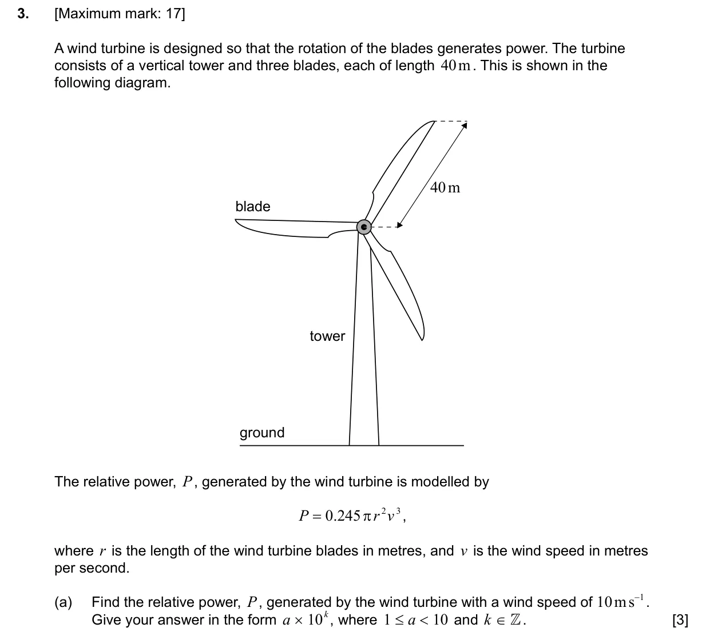
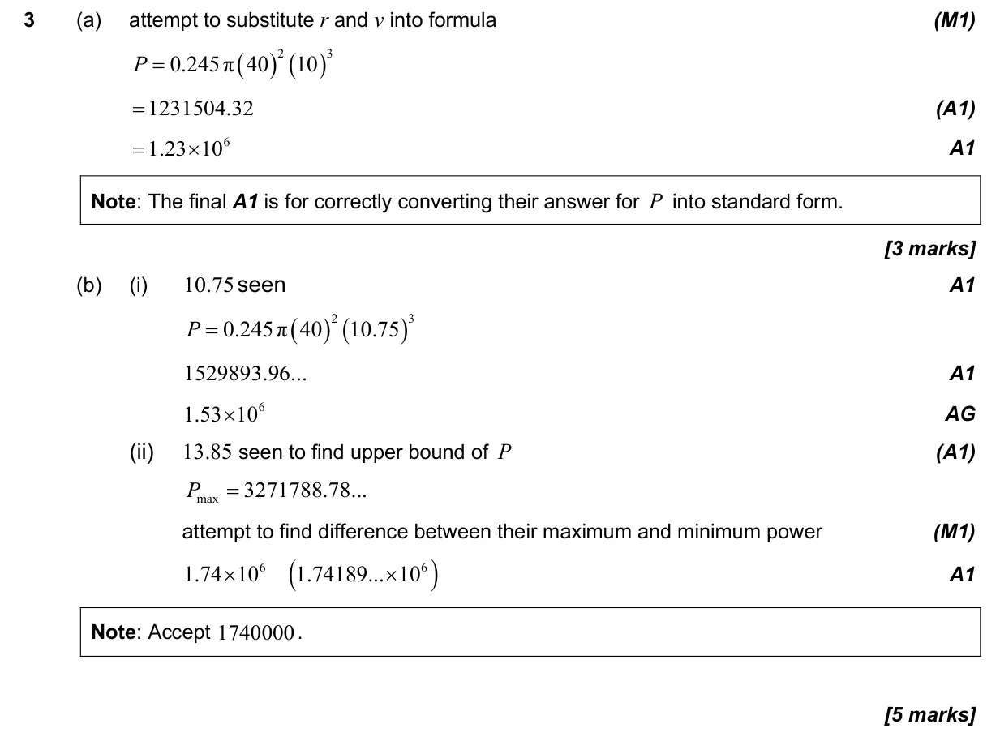
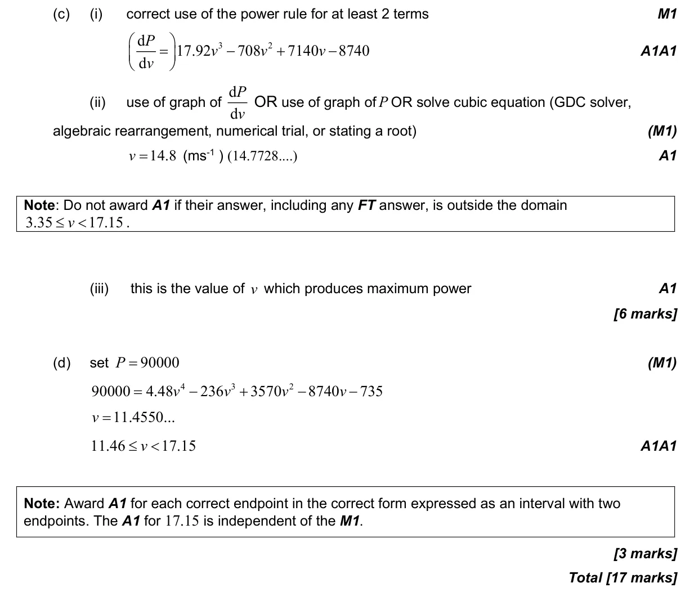

17 marks P2 TZ3 Calculator 1.6 Approximation, bounds, percentage error and estimation1.1 Scientific notation5.6 Stationary points: local maxima and minima5.3 Differentiating polynomials, n in Z2.4 Key features of graphs Question Hide breakdown abcd Markscheme 